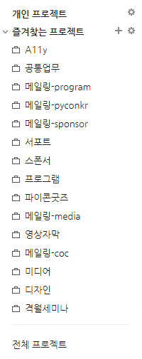
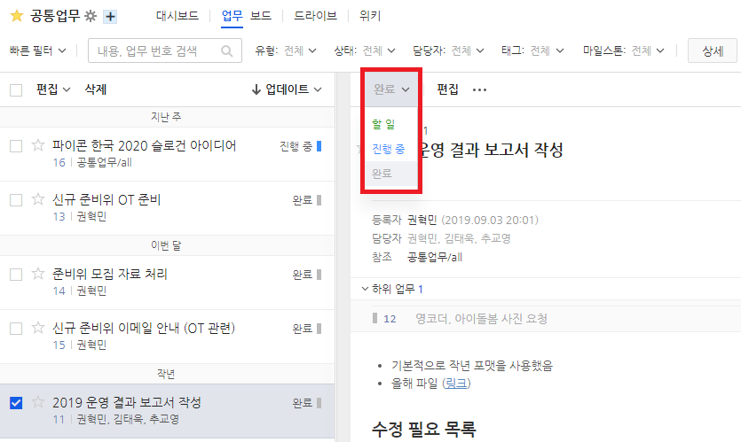

두레이를 통한 일감 관리
우린 그룹스를 통해 열심히 메일을 관리해보았지만 여전히 어려움이 있었습니다. 잘 보이지 않을 뿐더러 태그에 대한 의존성이 굉장히 높았기 때문이죠 (답변 안 된 메일을 찾는 것이 어려웠습니다). 그래서 2019년부터 새로운 일감 관리 도구인 두레이를 써보기로 했습니다.
메일 뿐만 아니라 우리가 슬랙에서 얘기했던 것 또는 정기회의에서 나오는 여러 가지 일감들을 놓치지 않고 수행하기 위해 일감 관리 도구가 필요했고 여러 시도들이 있었습니다.

두레이는 프로젝트 단위로 이뤄져있습니다. 각 프로젝트에 멤버로 참여하면 내부의 업무들을 볼 수 있습니다. 멤버로 참여하기 위해서는 이미 멤버인 분에게 초대를 요청하세요.

업무에 내가 담당자일 경우 각 업무에 대해 내 업무 상태를 표시할 수 있습니다. 업무 상태는 커스터마이징 가능합니다.